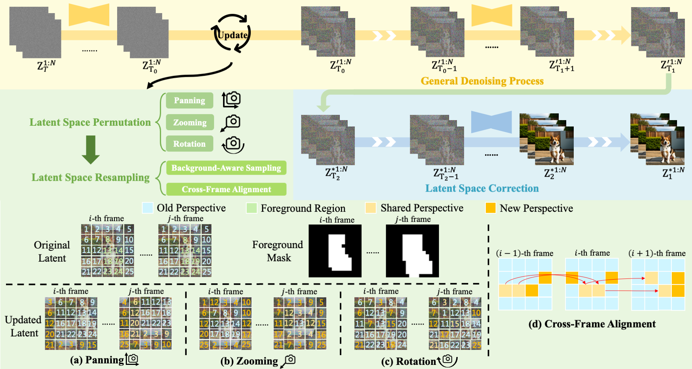
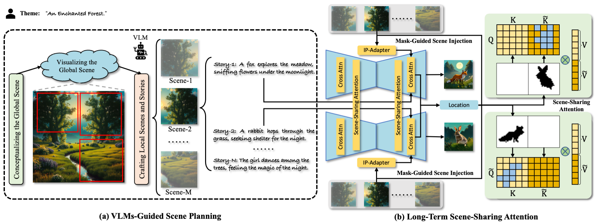

Biography
I'm Quanjian Song (宋泉鉴), a Master candidate in the Department of Computer Science and Technology at
Xiamen University.
I am currently researching in the Media Analytics and Computing Lab, supervised by
Prof. Rongrong Ji and
Prof. Liujuan Cao.
My recent research interests lie in lightweight/efficient 2D/3D/4D AIGC.
Below is my personal experience:
- Sep. 2024 - Apr. 2025: AIGC Intern supervised by Ph.D. Jingyu Lin and Prof. Cunjian Chen. Department of Data Science and AI at Monash University, Melbourne, Monash.
- Sep. 2020 - Jun. 2024: Awarded Bachelor of Science. Zhejiang University of Technology, Hangzhou, China.
- Oct. 2023 - Jan. 2024: AIGC Intern supervised by Prof. Zhenzhong Lan. Westlake Xinchen Technology, Hangzhou, China.
Publications

arXiv

arXiv

Projects
-
Jul. 2022 - Oct. 2022, Development of the GPU operator
LuUnpackfor the MindSpore deep learning framework.
Awards
- May 2025, Sixth Place, Track 3: Talking Head, NTIRE Workshop and Challenges @ CVPR 2025.
- Jun. 2024, Outstanding Undergraduate Graduate.
- Aug. 2023, First Prize, China College Students' Service Outsourcing Innovation and Entrepreneurship Competition .
- Jan. 2023, First Prize, Chinese Mathematics Competitions (Non-Mathematics Major Group) for College Students (CMC) .
- Nov. 2021, First Prize, China Undergraduate Mathematical Contest in Model (CUMCM) .
Reviewers
- Not yet.